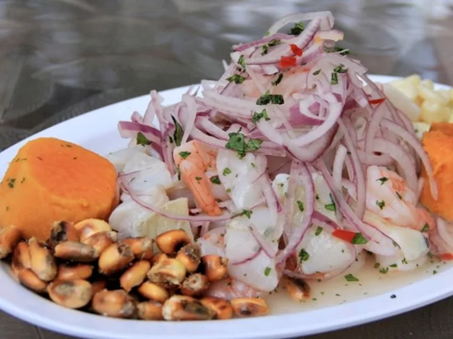
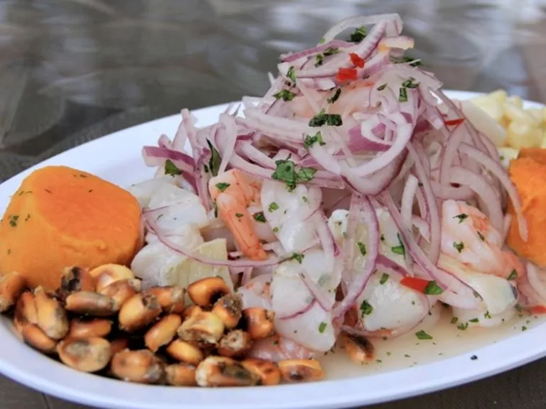
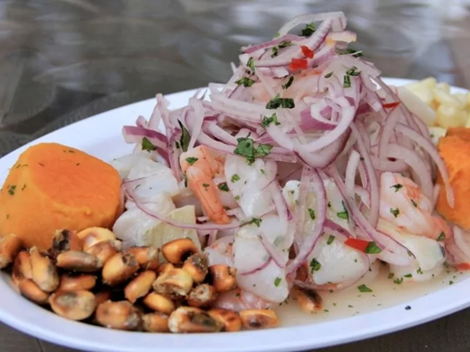
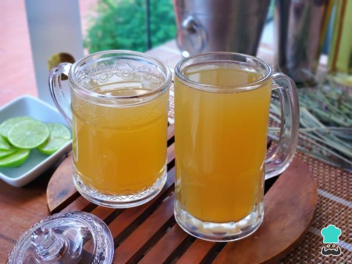

¿Antojo de Perú? 🇵🇪 ¡Visítanos y descubre los sabores más auténticos! Ceviche fresco, lomo saltado y mucho más. ¡Te esperamos! #comidaperuana #PeruvianFood
 



¿Antojo de Perú? 🇵🇪 ¡Visítanos y descubre los sabores más auténticos! Ceviche fresco, lomo saltado y mucho más. ¡Te esperamos! #comidaperuana #PeruvianFood

Pescado fresco marinado en jugo de limón, acompañado de cebolla, ají limo, cilantro y camote.
Rodajas de papa sancochada cubiertas con salsa de queso, ají amarillo, y leche, servidas con huevo cocido y aceitunas.

Papas sancochadas cubiertas con una salsa a base de maní, ají y huacatay, típico de Arequipa.

Mejillones cocidos y servidos con una mezcla de tomate, cebolla, maíz y jugo de limón.

Guiso de pollo desmenuzado en una cremosa salsa de ají amarillo, servido con papas sancochadas y arroz blanco.
Tiras de lomo de res salteadas con cebolla, tomate, ají y salsa de soya, servido con papas fritas y arroz.

Arroz sazonado con especias y mezclado con mariscos frescos como camarones, calamares y pulpo.

Pollo asado marinado en una mezcla de especias peruanas, acompañado de papas fritas y ensalada.
Una mezcla de arroz y frejoles refritos, acompañada de lomo saltado o bistec a la plancha.

Estofado de mondongo y papas, sazonado con cúrcuma, ají amarillo y hierbabuena.
Un clásico postre limeño a base de manjar blanco y merengue de vino oporto, decorado con canela.

Postre tradicional a base de maíz morado, frutas secas, y especias. Se sirve caliente o tibio.

Delicioso postre hecho con arroz, leche, y azúcar, aromatizado con canela y clavo de olor.

Dulces anillos fritos hechos a base de camote y zapallo, servidos con miel de chancaca.

Tradicional turrón limeño, compuesto de capas de masa dulce, bañadas en miel de chancaca y decorado con grageas de colores.

Refrescante bebida hecha de maíz morado, piña, manzana, canela, y clavo. Servida fría y ligeramente endulzada.

El coctel más representativo de Perú, preparado con pisco, jugo de limón, jarabe de goma, clara de huevo, y un toque de amargo de angostura.

Gaseosa peruana de sabor dulce y único, perfecta para acompañar cualquier comida.

Bebida caliente tradicional hecha a base de cebada, hierbas medicinales, linaza, y limón. Ideal para consumir en las mañanas o noches frescas.
Refrescante bebida fría hecha con cebada tostada, jugo de limón, y endulzada con miel o azúcar.